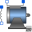
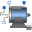
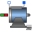

QuasiStationaryMachine |
|
Information
This information is part of the Modelica Standard Library maintained by the Modelica Association.
This icon is designed for a quasistationary machine model.
Extended by (3)
|  |
Modelica.Electrical.Machines.BasicMachines.QuasiStationaryDCMachines Quasistationary series excited linear DC machine |
|  |
Modelica.Electrical.Machines.BasicMachines.QuasiStationaryDCMachines Quasistationary electrical shunt/separate excited linear DC machine |
|  |
Modelica.Electrical.Machines.BasicMachines.QuasiStationaryDCMachines Quasistationary permanent magnet DC machine |